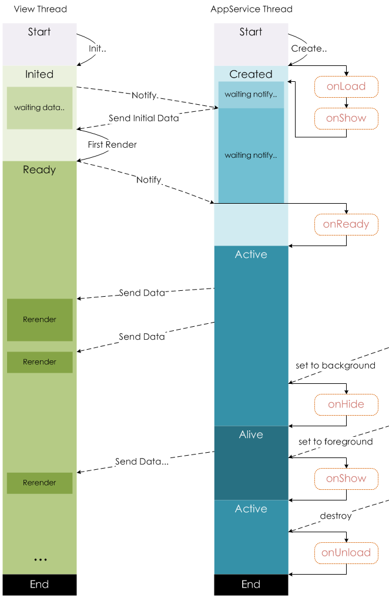

整体架构
视图层和逻辑层分离，通过数据驱动，事件交互，不直接操作DOM
视图层负责渲染页面结构，逻辑层负责逻辑处理、数据请求、接口调用等
视图层与逻辑层通过数据和事件进行通信，逻辑层提供数据给视图层，视图层通过绑定/捕获事件发起交互让逻辑层处理
视图使用
WebView渲染，JS由JSCore(IOS)/X5(Android)/nwjs(DevTool)渲染解析JSBridge下架起上层开发与Native（系统层）的桥梁，使得小程序可通过API使用原生的功能，且部分组件为原生组件实现，从而有良好体验
运行环境
| 运行环境 | 逻辑层 | 渲染层 |
|---|---|---|
| iOS | JavaScriptCore | WKWebView |
| Android | X5 JSCore | X5浏览器 |
| 小程序开发者工具 | NWJS | Chrome WebView |
组件
wxml为微信开发的一种标记语言，只能使用其指定的组件（view, text, navigator, image, button等，详见文档<组件>）。
View - Component
- 小程序的组件基于Web Component标准
- 使用Polymer框架实现Web Component
View - Native Component
- 目前Native实现的组件有
<canvas/> <video/> <map/> <textarea/> - Native组件层在WebView层之上

wxss样式表
支持大部分CSS特性
不支持多层选择器-避免被组件内结构破坏
style：style 接收动态的样式，在运行时会进行解析，请尽量避免将静态的样式写进 style 中，以免影响渲染速度。
<view style="color:;" />拓展：
尺寸单位：添加尺寸单位rpx，可根据屏幕宽度自适应
样式导入：使用@import语句可以导入外联样式表
生命周期
页面生命周期

微信小程序生命周期分“应用生命周期”、“页面生命周期”、“组件生命周期”。
应用生命周期含onLaunch, onShow, onHide状态，onLaunch, onShow可获取打开小程序时的相关参数path, query, scene， shareTicket， referrerInfo，注册为App({})，一个小程序只有一个App({})。
页面生命周期含onLoad, onShow, onHide, onReady, onUnload，onLoad可获取其他页面打开当前页面时所所调用的query参数，注册为Page({})，每个页面有且必须有一个Page({})。
通信机制
功能限制
没有window、document对象
长按图片识别二维码/小程序码
可以实现的场景：
- 微信聊天所发的二维码/小程序码，
- 通过微信自带浏览器运行的Web页面（已测试）
小程序能不能实现？
不能，但可以点击预览该图片，点击右上角操作即有识别二维码/小程序码选项
能否点击直接跳转至公众号？
官方不支持功能（可考虑webview）
小程序跳转小程序
tips: 只有同一公众号下的关联的小程序之间才可相互跳转